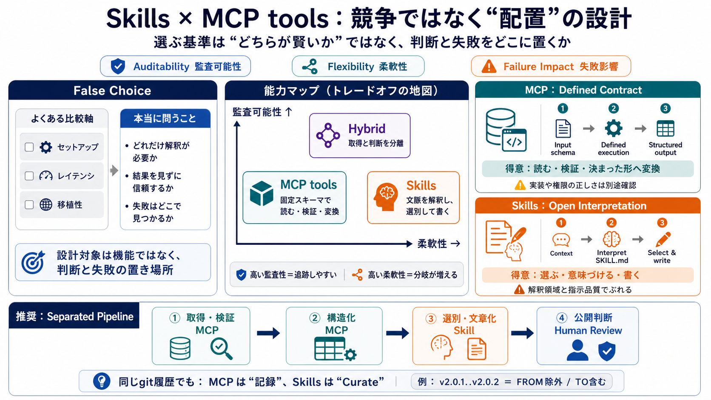

比較されがちな細目
セットアップ
easy / hard
レイテンシ
fast / slow
移植性・SDK
more / less

Skills versus MCP
選ぶ基準は「どちらが賢いか」ではない。解釈を許す場所と、監査して信頼する場所を分ける。
False Choice
セットアップや速度の比較だけでは、エージェントがどこで判断し、どこで誤るかを説明できない。
設計対象は機能そのものではなく、判断と失敗の置き場所。 SkillsとMCP toolsは、その配置を変える二つの実行形態である。
Two Axes
Auditability（監査可能性）は追跡できる度合い、Flexibility（柔軟性）は状況を解釈できる度合いを表す。
監査可能性・再現性・説明責任
何を渡し、何が返り、どの境界と規則で処理したかを後から確認できるか。
柔軟性・文脈理解・裁量
ユーザーの意図や状況を読み、固定しにくい基準で選別・表現できるか。
監査可能性を高めるほど解釈の余地は狭まり、柔軟性を高めるほど結果の分岐は増える。これは優劣ではなく、意図的に管理する交換条件である。
Capability Map
MCP toolsとSkillsは別々の領域を受け持ち、組み合わせることで一つの能力になる。
固定スキーマで忠実に読む・返す
取得と判断を分離
文脈を解釈し、選別して書く
Defined Contract
入出力スキーマと実装が、エージェントに許される操作を限定する。同じ要求から同じ構造を得たい工程に強い。
対象、範囲、オプションを明示し、曖昧な入力を減らす。
コード化した処理で取得・検証・変換を行う。
後段が機械処理できる一定の形式で結果を返す。
得意：読む、検証する、決まった形へ変換する。注意：再現性が高くても、入力・権限・実装自体が正しいとは限らない。
Open Interpretation
エージェントはSKILL.mdの自然言語指示を文脈に合わせて適用する。固定規則にしにくい選別や文章化に強い。
依頼、差分、利用者、過去の会話をまとめて読む。
「重要」「ユーザー向け」など意味的な基準を解釈する。
情報を選び、分類し、目的に合う文章へ編集する。
得意：選ぶ、意味づける、書く。コスト：モデルだけでなく、広い解釈領域と指示品質が結果のぶれを生む。
Same Repository
changelog生成をMCPツール版とSkills版で作り、同じリポジトリ履歴に対する出力差を観察する。
同一リポジトリ、同一タグ範囲、同一コミット履歴を対象にする。
指定範囲を検証し、コミット情報を構造化データとして返す。
差分を読み、掲載対象を選別し、利用者向けの文面へまとめる。
比較が示すのは「正解率の勝負」ではない。どの判断がコードに固定され、どの判断が実行時に残るかの違いである。
Exact Range
git範囲の小さな曖昧さが、収集コミットと最終changelogを変える。境界を仕様として露出させることが重要だ。
開始タグ自身のコミットを除外し、その後の変更から読む。
終了タグが指すコミットまでを取得対象に含める。
assertRefによる参照検証、安定した区切り文字、構造化出力は、監査可能性を理念ではなく実装へ落とす手段になる。
Report or Curate
出力差は失敗とは限らない。MCPは忠実な報告、Skillsは利用者への意味づけという別の目的を担う。
Separated Pipeline
MCPで信頼できる材料を作り、Skillで意味を編集し、人が公開判断を行う。混ぜるのではなく境界を設計する。
参照、範囲、権限を検証し、コミットを収集。
MCP TOOLhash、author、message、diffなどを一定形式へ。
MCP TOOL利用者への影響を判断し、changelogを編集。
SKILL抜け、誤解、表現、リスクを確認してリリース。
HUMAN REVIEWJuly 2026
2026年7月の仕様改訂でセッション開始・管理の負担が軽減された。「MCPは重い」という先入観の比重が下がる。
初期ハンドシェイク、状態管理、スケール時の取り扱いが導入コストとして目立ち、MCPを避ける理由になりやすかった。
Stateless（状態を持たない）方向への簡略化により、解釈量・監査要件・失敗影響を中心に選びやすくなった。
運用負担はゼロではない。ロードバランサ、権限、外部依存、デバッグ体制は依然として評価が必要だ。
Four Questions
能力の名前から選ばず、その出力を誰が使い、どこで確認し、誤ったときに何が起きるかから決める。
再実行、比較、ログ監査が重要な工程。
パイプライン入力には固定契約を置く。
意味的な基準を実行時に適用する。
レビュー可能なら裁量を許容しやすい。
Different Failures
MCPの誤りは入力・実装側に偏在し、Skillsの誤りは意味解釈に現れやすい。対策も別々に設計する。
MCPは安全そのものではなく、失敗を特定しやすい。 Skillsは不正確そのものではなく、判断の正当性をレビューする必要がある。
Visible Failure
技術選択だけでは品質は決まらない。監視、レビュー、承認、責任者をワークフローの境界に置く。
レビュー可能性にはコストがある。許容誤差、レビュー担当、処理量、SLAまで定めなければ、人間確認が新しいボトルネックになる。
Evidence Boundary
changelog事例は設計思想を明快に示す一方、すべてのタスクで同じ配分が最適とは証明していない。
高度な推論、個別パーソナライズ、外部データ要約でも同じ配置原則が機能するかを見る。
セキュリティ変更、送金、削除、権限操作では、柔軟性より承認と制約を強く置く必要がある。
欠落率、誤分類率、再現性、レビュー時間、修正コストを複数リポジトリで比較する。
原則を万能解として使わず、タスクの性質・影響度・人間の関与・運用コストを測って配置を更新する。
Design the Boundary
MCP toolsとSkillsの本質は競争ではない。失敗したときの影響が見える場所へ、それぞれの能力を配置する。
> The new version of the MCP spec proves that the maintainers listen to feedback from the community. It solves real issu…
Skills don't really accomplish that well and are more unreliable when your target audience is a B2B customer or person w…
The Model Context Protocol has its biggest update since launch. The new specification - officially versioned 2026-07-28 …
The latest MCP 2026-07-28 specification was released last week, together with updated TypeScript, Python, Go, and C# SDK…
As of the July 28, 2026 specification revision, MCP’s remote transport is stateless. Sessions and the initialization han…